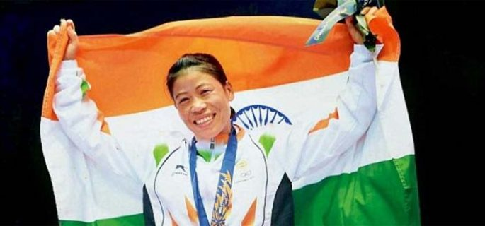
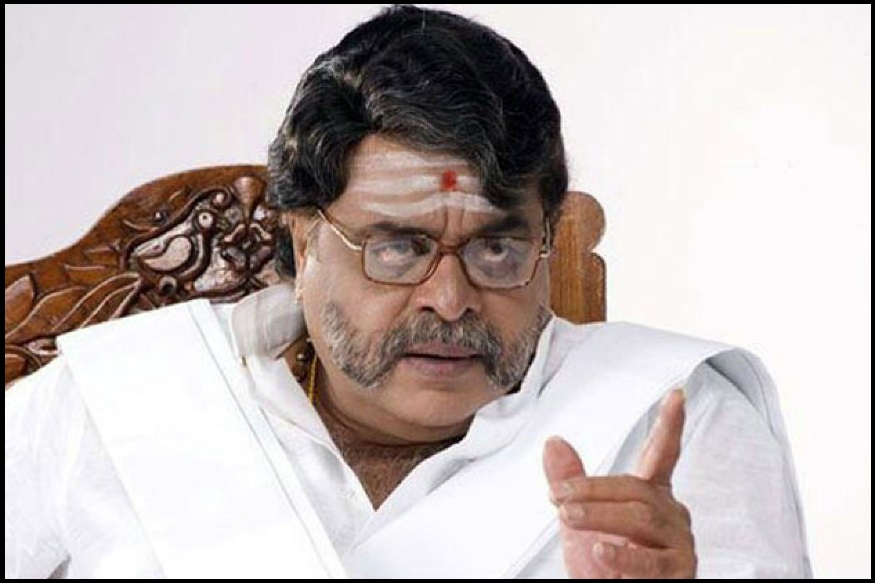

| HOME | FOLLOW | SHARE |
| Sports | technology | business | entertainment |
|  |
Mary Kom wins gold at Asian Boxing ChampionshipHo Chi Minh City, Nov 8 (IANS) Star Indian boxer MC Mary Kom defeated North Korea’s Hyang Mi Kim in the 48 kg category to clinch gold in the Asian Boxing Championship here on Wednesday. The Olympic bronze medallist got the better of her opponent in a unanimous 5-0 verdict to win her fifth gold at the Asian Boxing Championship and first in the 48 kg category. |
The OnePlus 6T launch is being rescheduled to avoid colliding with Apple’s eventOnePlus is moving up the launch of its OnePlus 6T by a day in order to avoid colliding with Apple’s iPad Pro and Mac event on October 30th, which was just announced yesterday. The change was revealed in a post by CEO Pete Lau on the OnePlus community forum, who explained the difficult decision. Both events were scheduled to take place in New York on the same day, but OnePlus has announced that it will now hold its event on October 29th at the same location and 11AM ET time. The sold-out launch event, which has over 1,000 confirmed attendees so far, is a ticketed event for OnePlus fans as well as press. In past events, OnePlus has credited the cost of the ticket back when attendees purchased a phone. OnePlus is now reaching out to attendees to let them know about the rescheduling, and it’s offering to cover travel expenses for attendees if they need to change their flights. The company is also offering full refunds to ticket holders who won’t be able to attend. Anticipation for the new phone is high, as the OnePlus 6T is rumored to come with an in-display fingerprint sensor and a tiny notch. Hopefully, OnePlus will get enough attention to make up for the pain of rescheduling an event before Apple takes away the spotlight the following day. |
|
|  |
Ambareesh, the Beloved Rebel of Kannada Cinema and Politics, Passes Away at 66The actor was admitted at city's Vikram hospital after suffering massive cardiac arrest, following which he passed away, the hospital authorities confirmed. Ambareesh reportedly collapsed in the evening at his home in JP Nagar and was immediately rushed to the hospital. He was earlier diagnosed with respiratory and kidney problems and has been admitted to Mount Elizabeth hospital of Singapore. |